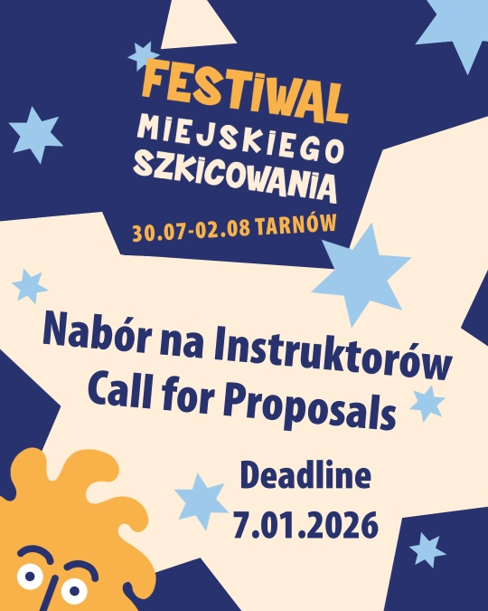
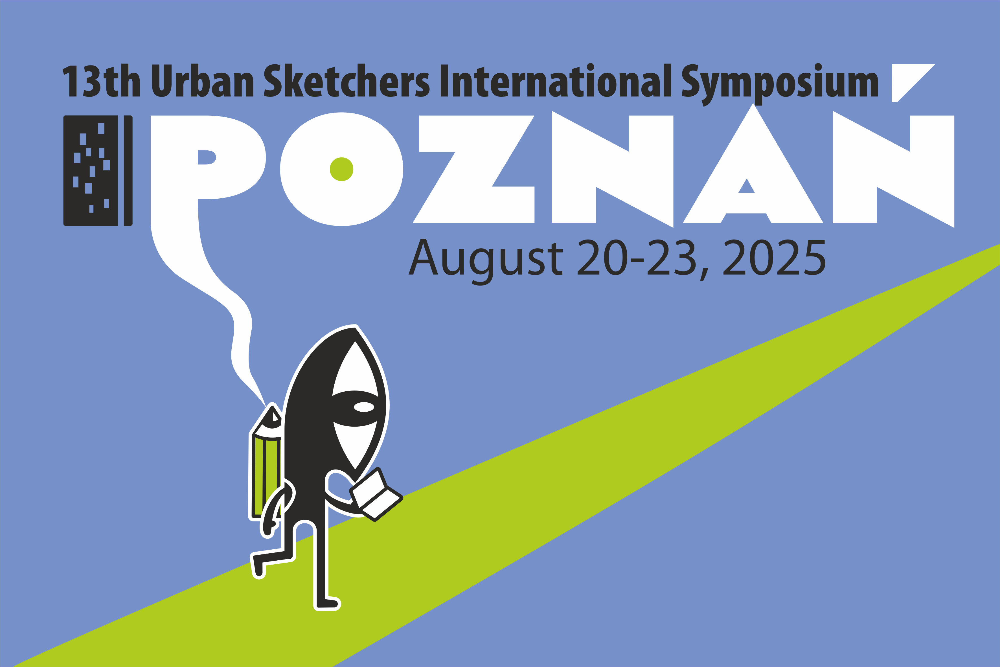

Urban Sketching Festival in Tarnów, July 30 - August 2, 2026
Poland's hottest spot, a Renaissance Old Town, wooden churches, multicultural heritage, Bem's tomb, and Wyspiański's sketches – Tarnów is a city made for urban sketching. Beautiful monuments, arcades sheltering from all weathers, cozy cafes, and a street layout that allows you to walk everywhere. History is literally at your fingertips here. That's why we're organizing the fourth Urban Sketching Festival in Tarnów. Mark your calendars: July 30 – August 2, 2026. See you in Poland!
CALL FOR PROPOSALS
Would you like to teach a workshop, give a demo, or host a talk at the Urban Sketching Festival in Tarnów, Poland? If so, this is your moment to step forward.
Tarnów is the perfect setting for a festival like this: a Renaissance Old Town, wooden churches, multicultural heritage, and arcades that make sketching comfortable even when the weather misbehaves. And to top it off, the legacy of Wyspiański and his Tarnów sketches, which we aim to make an important part of the festival program.
If you have a workshop idea that can inspire people, a demo that naturally draws attention and encourages others to sketch, or a lecture that leaves participants buzzing with new ideas—apply. We’re looking for people with passion, skill, and the courage to sketch on-location.
Festival dates: July 30 – August 2, 2026 (4 days)
Location: Tarnów, Poland
Application deadline: January 7, 2026
WORKSHOPS AND DEMOS
Requirements:
- Each instructor conducts one workshop (up to 3 hours) and one demonstration (up to 1 hour) on-location. There are 15 participants in the workshop, who receive materials, complete exercises and sketches, and get feedback and corrections from the instructor. During the demo, the instructor creates a sketch, explaining their process and its stages. The demo is open to everyone; anyone can join and watch. During the demos, participants are passive observers (they can only ask questions).
- Prepare a workshop description. What technique do you want to use, what do you want to focus on? Describe the individual stages of your workshop. What will the participants learn specifically? Workshop duration: up to 3 hours (including walking with the group to the venue from the Festival Hub).
- Show examples of sketches/exercises.
- Choose a workshop location - use our list of suggestions, click this link to the map. Each pin has a Google Street View link in the description. Take into account the time it takes to walk from the Festival Hub.
- Send us your photo and a short description about yourself (what your experience is).
- Show us your work – provide your website or social media profile.
- Polish language is not required.
Conditions:
- The instructor leading the workshop and demo will receive free accommodation from the organizers during the festival (July 30–August 2, 2026) and a PLN 1,500 honorarium. (We do not reimburse travel expenses and meals.)
LECTURES
Requirements:
- Prepare a description of your presentation on a topic related to urban sketching.
- Send us your photo and a short description about yourself.
- Show us your work – provide your website or social media profile.
- Czas trwania prezentacji: do 1 godziny. Zapewniamy sprzęt do jej odtworzenia na ekranie
- Polish language is not required.
Conditions:
- The lecturer will receive complimentary accommodation from the organizers during the festival (July 30–August 2, 2026).
You can read in the Blog tab about the previous editions of the Urban Sketching Festival that took place in 2022, 2023 & 2024 in Świdnica.
Urban Sketchers Poland
WHO WE ARE? We are a group promoting sketching on location in urban spaces, bringing together drawing enthusiasts of all skill levels. Urban Sketchers is a grassroots initiative that is implemented around the world, and its cradle is Seattle.
WHAT WE DO? We sketch the world around us using all available techniques, based on direct observation and the experience of being in a given place. We publish our works on the Internet and support each other in creative development, creating a unique international community.
FOR WHOM? Our drawing meetups are for everyone, regardless of age, opinions and skills - all you need is to like to draw (or paint). We want to show the world seen through our eyes, one sketch at a time.
We sketch in the spirit of our manifesto.
- We draw on location, indoors or out, capturing what we see from direct observation.
- Our drawings tell the story of our surroundings, the places we live, and where we travel.
- Our drawings are a record of time and place.
- We are truthful to the scenes we witness.
- We use any kind of media and cherish our individual styles.
- We support each other and draw together.
- We share our drawings online.
- We show the world, one drawing at a time.
Information about meetings and other events organized by us can be found here.
Urban Sketchers in Poland
On the map below, you'll find places where our sketchers are and how to contact them. If you'd like to sketch with us, please let us know!
Urban Sketchers Symposium Poznań 2025
It was our pleasure to host the 13th Urban Sketchers International Symposium, which was held in Poznań on August 20-23, 2025. For more information about the Symposium please visit www.urbansketchers.org.
Family photo from the Symposium:
 Author: Piotr Dutkiewicz
Author: Piotr Dutkiewicz
Photos from the Urban Sketching Festival in Świdnica 2024:


Photos for download are here. Author: Daniel Gębala
Contact
Urban Sketchers is a non-profit organization and it's mission is to raise the artistic, storytelling, and educational value of on-location drawing, promoting its practice and connecting people worldwide who draw on location where they live and travel.
Urban Sketchers Poland is a local chapter of this organization, and its goal is to spread the above mentioned values and ideas in Poland.
More information: www.urbansketchers.org